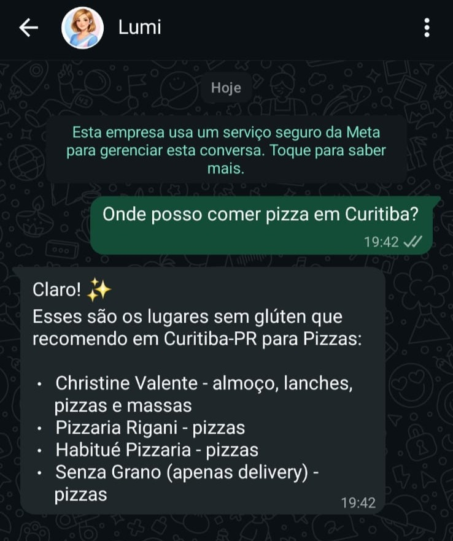
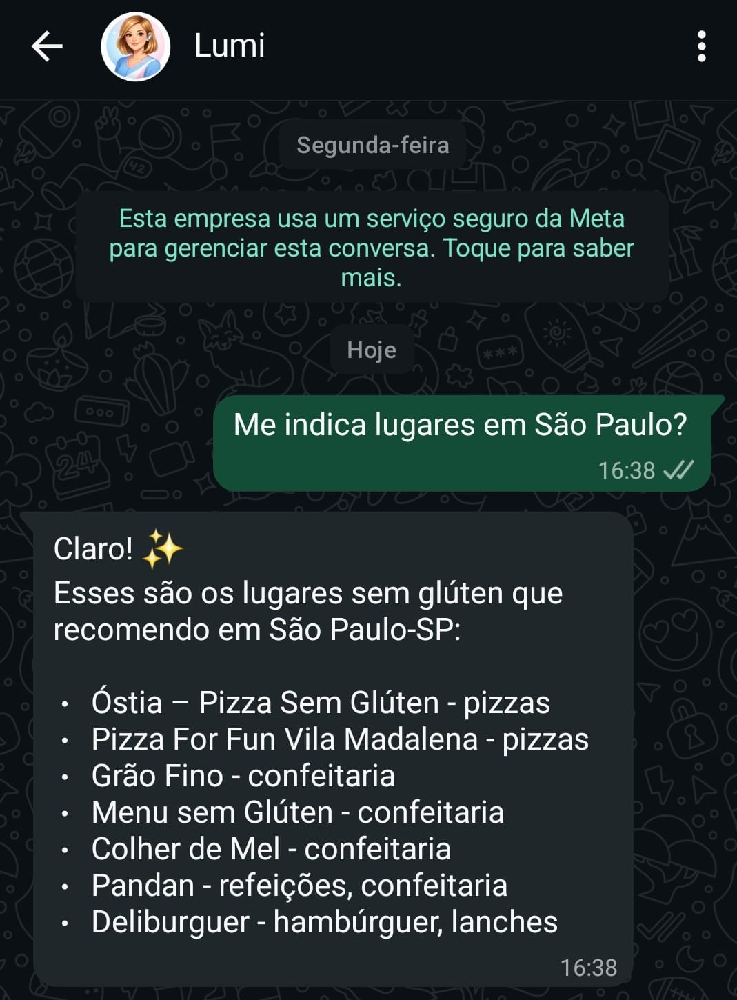
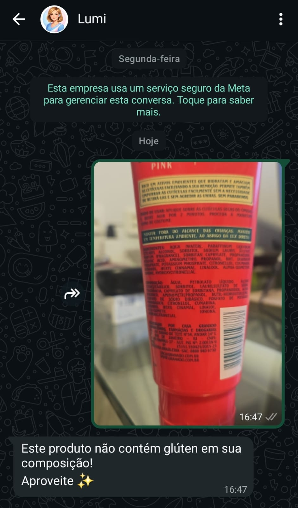
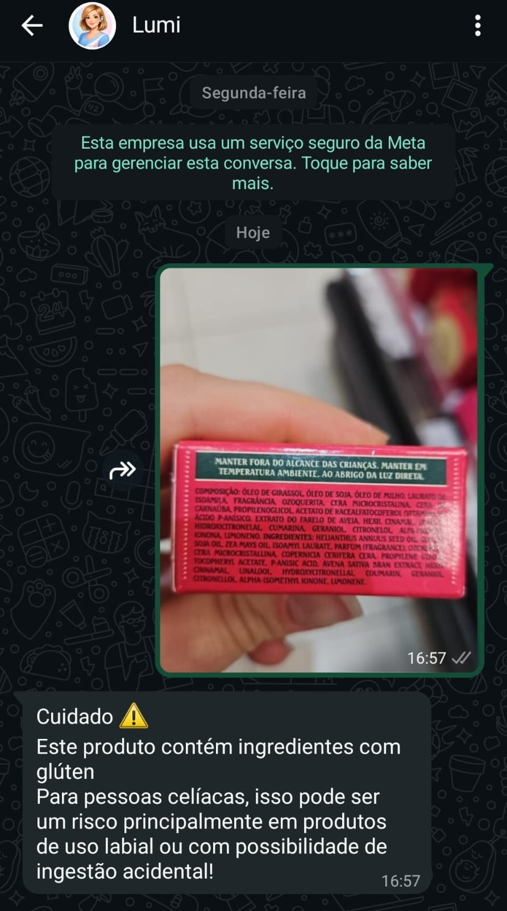

Veja a Lumi em ação





Receba indicações de restaurantes confiáveis no Brasil e, em breve, no mundo!
Envie uma foto da lista de ingredientes de produtos cosméticos e descubra se contém glúten ou não.
A Lumi é um chatbot especializado em segurança para celíacos.
Ela utiliza múltiplas verificações e interpreta imagens e nomes de cidade para oferecer respostas seguras.
Algumas perguntas são mais claras e objetivas — e isso
ajuda a Lumi a te orientar com ainda mais precisão.




A Lumi está indo além da leitura de ingredientes em cosméticos e indicação de lugares seguros.
Ela está entrando em contato direto com marcas, fazendo as perguntas certas sobre processos, risco de contaminação cruzada e segurança para celíacos — tudo para trazer respostas mais confiáveis para o seu dia a dia. Enquanto você vive sua rotina, a Lumi faz esse trabalho por trás: coleta informações, organiza os dados e transforma tudo em respostas simples no WhatsApp, sempre que você precisar.
Além disso, ela vai reunir os retornos das marcas em uma newsletter mensal, para que você tenha acesso a informações atualizadas e transparentes sempre que quiser. A ideia é simples: você não precisa mais correr atrás dessas respostas.
A Lumi faz isso por você — para que você possa viver com mais tranquilidade, confiança e liberdade. ✨
✔ Consultas ilimitadas de marcas
✔ Análise da presença de glúten em cosméticos
✔ Lista de locais confiáveis no Brasil
✔ Atualizações constantes
Sou celíaca há 14 anos, praticamente o mesmo tempo em que vivo e respiro tecnologia. Ao longo desse caminho, aprendi na prática como pode ser difícil ter certeza do que é realmente seguro consumir.
Essa insegurança constante foi o que me motivou a criar a Lumi. A ideia era simples: usar tecnologia para transformar dúvida em clareza. Hoje, a Lumi é uma assistente inteligente no WhatsApp que, em segundos, ajuda a descobrir se um produto cosmético possui ingredientes com glúten.
Com o tempo, percebi que essa necessidade de segurança não está só no supermercado. Ela também aparece quando viajamos, saímos para comer ou exploramos um novo lugar. Por isso, a Lumi também indica lugares sem glúten confiáveis no Brasil (e em breve no mundo!) — para que você possa viver experiências novas com mais tranquilidade.
A Lumi nasceu para que pessoas celíacas vivam com mais independência, leveza e confiança. E eu tenho certeza de que ela vai se tornar sua melhor amiga sem glúten daqui pra frente ✨
Começar agora